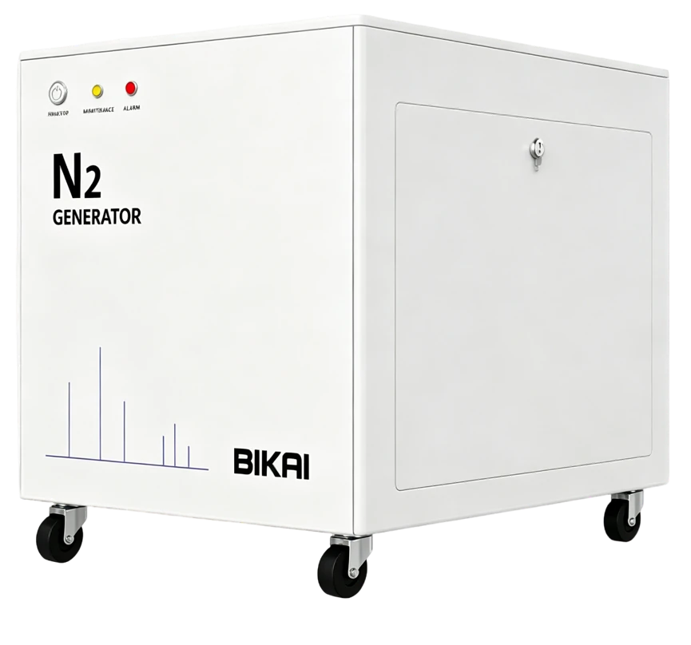

Генераторы газов
Генератор азота
Переключение между азотом и воздухом, суммарная производительность до 35 л/мин.
Запросить консультацию
Статус регистрации и наличие уточняйте по запросу
Серия BIKAI Light
| Модель | Характеристика |
| Light 35 | N2 max: 19 L/min, 55 psi; GAS1/2 AIR: 25 L/min, 100 psi; EXHAUST AIR: 26 L/min, 65 psi |
| Light 35 Pro | N2 max: 35 L/min, pressure: 100 psi |
| Light 70 | N2 max: 70 L/min, pressure: 100 psi |